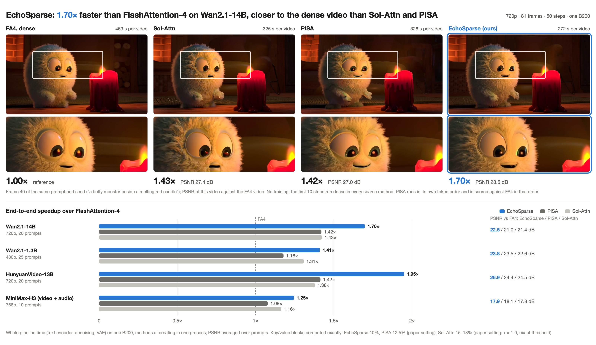
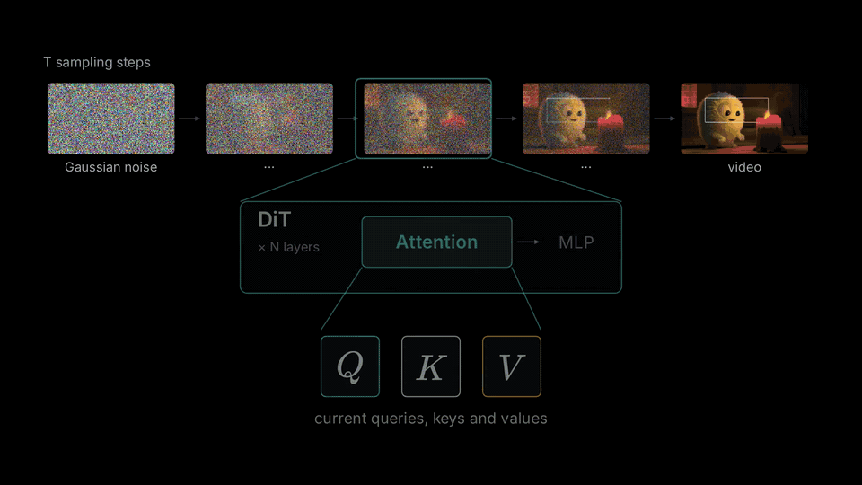
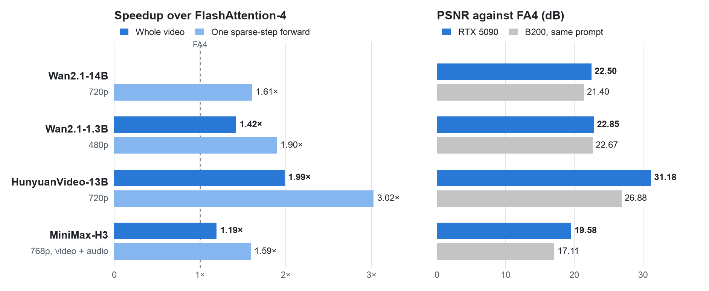
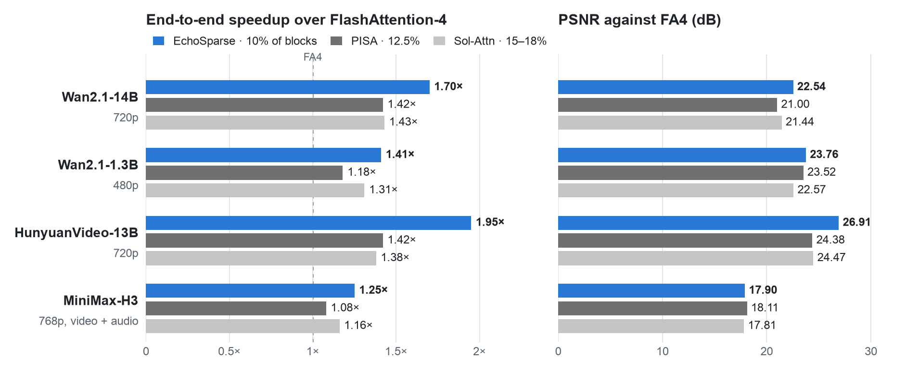

Research note · November 1, 2026
EchoSparse: block-sparse attention for video diffusion, guided by the previous step's softmax statistics
Between two denoising steps, the softmax normalizer of every attention row barely changes. EchoSparse carries it over and uses it three times in one kernel: as a fixed softmax offset, as a free block-probability map for the next step, and as the shared normalizer of the skipped blocks.

Attention dominates video diffusion
Take Wan2.1-14B generating a 720p, 81-frame video: every self-attention call sees 75,600 video tokens, there are 40 layers, two transformer forwards per denoising step (conditional and unconditional), and 50 steps. On a B200, one such self-attention call with dense FA4 takes about 79 ms, and the whole video about 470 s, most of it in attention. HunyuanVideo at 720p and 129 frames has 118,800 video tokens.
Block-sparse attention computes only some (query tile, key block) pairs. Training-free methods such as Sol-Attn and PISA compute 12.5–18% of the blocks on Wan. They still pay three costs:
- A separate pass to choose blocks, usually a coarse score map from block-averaged Q and K.
- Online softmax inside the kernel: for every key block the row maximum is updated and the accumulator rescaled.
- Skipped blocks are dropped or roughly approximated: dropping them shrinks the softmax denominator, and a rough approximation systematically underestimates their contribution.
Observation: the LSE of each attention row barely moves between denoising steps
The LSE (log-sum-exp) of a row is the log of its softmax denominator:
In dense runs of Wan2.1-1.3B we subtracted every self-attention LSE from the one at the same layer and position in the previous step (natural log):
| Denoising step | Median change | 99th percentile |
|---|---|---|
| 1 | 0.761 | 2.88 |
| 10 | 0.100 | 0.56 |
| 20 | 0.058 | 0.31 |
| 30 | 0.049 | 0.26 |
| 40 | 0.064 | 0.31 |
From step 10 on, the median is 0.05–0.10: before a step computes its attention, the previous step already gives every row's softmax denominator to within about 5–10%.
EchoSparse keeps the previous step's LSE of every layer and CFG branch and uses it in three places, all inside one attention kernel. The name refers to these statistics of one step coming back in the next.

Use 1: the previous LSE as a fixed softmax offset
FlashAttention-style kernels stay numerically safe with online softmax: for every key block they update the row maximum \(m\) and rescale the running numerator and denominator by \(e^{m_\text{old} - m_\text{new}}\).
EchoSparse uses the previous LSE \(a_i\) as the offset directly:
\(a_i\) appears in both numerator and denominator and cancels, so the result is exact however far off it is; it only has to keep the exponentials from overflowing or underflowing. The kernel therefore computes no row maximum and does no rescaling.
A tile whose row sums leave a safe range (log2 beyond ±60) is recomputed with online softmax; about 0.5% of tiles are. For the same block lists this takes the main kernel from 22.0 ms to 11.7 ms (B200, Wan2.1-14B shape).
Use 2: the next step's block probabilities from the same pass
When the offset is close to the true LSE, \(e^{s_{ij} - a_i}\) is already close to the softmax probability. While it computes the selected blocks, the kernel sums these values per 64-token key block and 128-row query tile, which gives the attention probability each block actually received at this step. Blocks that were not computed are estimated from their mean key on 16 rows of each tile and calibrated against the blocks of the same tile that were computed exactly.
At the next step every 128-row query tile takes the top 10% of blocks from this map. There is no separate scoring pass.
This selection is much more accurate than pooled scores. Offline, on real Q/K/V of Wan2.1-1.3B with 10% of blocks per tile and compensation, the relative error of one attention call is:
| Selection | Relative error |
|---|---|
| Previous step's true block probabilities | 0.110 |
| This step's true block probabilities | 0.110 |
| Top 10% by pooled scores | 0.188 |
| Sol-Attn's threshold rule (12% of blocks) | 0.158 |
Selecting with the previous step's probabilities is as good as selecting with the current step's.
A related result: on Wan, refreshing the selection only every 2, 4 or even 20 steps changes video PSNR by at most 0.55 dB relative to refreshing every step. In bidirectional generation the selection is stable across steps; EchoSparse refreshes every step because in this design a refresh costs nothing extra.
Use 3: skipped blocks stay in the same softmax
Each skipped block is represented by its mean key \(\bar k_b\) and mean value \(\bar v_b\), weighted by its token count \(n_b\):
Because every term shares the offset \(a_i\), exact blocks and compensation terms add into the same numerator and denominator, with one division at the end.
This term matters most for quality: without it, PSNR drops by 1.19 dB on the 14B model and 5.37 dB on the 1.3B model.
But the exponential of a mean is always smaller than the mean of the exponentials, and the more spread out a block's keys are, the larger the underestimate. So the third of the skipped blocks with the highest estimated probability get four representatives each, found by k-means in the query metric:
- from this call's queries, \(G = Q^\top Q / (L d) + \lambda I\), factored by Cholesky as \(G = M M^\top\);
- clustering runs on \(X = K M\), where the squared distance of two keys approximates the mean squared logit difference the queries see;
- token weights come from 64 probe queries (means of evenly spaced query blocks), each probe's softmax over the block's tokens;
- four contiguous segments as initialization, at most six Lloyd iterations. Each representative is still the plain mean of its cluster, weighted by the cluster size.
Four representatives instead of one add 0.72 dB (14B) and 0.98 dB (1.3B); the query metric adds another 0.35 dB and 0.39 dB, and 1.14 dB on HunyuanVideo.
Ideas we tried and dropped
- Calibrating the compensation's denominator with the known LSE. The skipped probability is about one minus the computed probability, so the denominator could be computed directly. It was worse than the compensation above at every density: the step-to-step change of the LSE is of the same order as the skipped probability.
- An error budget ε deciding how many blocks each row computes. Pooled-key estimates badly underestimate block probabilities (a nominal 5% skipped was 30–36% in practice), and a uniform ε gives more blocks to heads with diffuse attention, which are the heads the compensation already approximates best. The same number of blocks per tile, ranked by the probability map, gives the same error as a per-head global allocation and balances the load.
- A second-order variance correction of the compensation terms. Worse on average, and too large on some heads.
The schedule
- The first 10 denoising steps run dense with FA4, the same as the Sol-Attn paper. The 10th (the last dense step) sends every block through the EchoSparse kernel, which gives an exact output and the first probability map.
- From then on every 128-row query tile computes 10% of the key blocks exactly and compensates the others as above.
- With CFG the unconditional branch reuses the conditional branch's selection of the same step and keeps its own LSE.
- Wan's video tokens are put in 3D Morton order, so a 64-token block is a 4×4×4 patch of space and time. HunyuanVideo's text tokens go at the end of the sequence and are computed exactly by every tile; their own query rows use FA4. MiniMax-H3's text, conditioning and audio prefix is handled the same way.
Implementation
B200 (SM100): the kernels are written in CuTe DSL with tcgen05 MMAs and tensor memory, warp-specialized like FA4, two CTAs per SM. Exact blocks, block-mean representatives and k-means representatives are computed in one kernel and one softmax. Time per self-attention call at the Wan2.1-14B shape:
| Method | Per call |
|---|---|
| FA4, dense | 79.1 ms |
| Sol-Attn (τ = 1.0, the paper's threshold estimator) | 35.4 ms |
| PISA (12.5%) | 34.6 ms |
| EchoSparse (10%) | 18.1 ms |
RTX 5090 (SM120): there is no tcgen05 or tensor memory, so the kernels are written in Triton with ordinary tensor-core dots; they compute the same quantities in the same precision. Exact blocks go as two 32-key halves, the compensation 32 columns at a time. With 32 GB of memory every layer keeps only the LSE of each branch and the next step's selection (two bit masks); the probability map is scratch shared by all layers. The weights of 14B, HunyuanVideo and H3 stay in CPU memory and are copied to the GPU group by group.
Results
RTX 5090: complete video generation

For each model we took the first prompt of the B200 evaluation with the same seed and ran one complete 50-step generation with EchoSparse and one with dense FA4, each on one GPU. The weights of Wan2.1-14B, HunyuanVideo and MiniMax-H3 stay in CPU memory and are copied to the GPU group by group; the 1.3B model sits on the GPU. On every prompt the RTX 5090 PSNR is on par with or above the B200 PSNR of the same prompt: the Triton kernels lose no quality. A sparse-step forward of HunyuanVideo is 3.02× faster than with FA4, the whole video 1.99×.
B200: complete video generation

50 denoising steps, including text encoding and VAE decoding; every method keeps the first 10 steps dense. Every method uses its published setting: EchoSparse computes 10% of the blocks, Sol-Attn uses its paper's threshold estimator (τ = 1.0, 15–18% in practice), PISA computes 12.5%. PSNR is against the dense FA4 video with the same prompt and seed, over 10–25 prompts per model. EchoSparse computes the fewest blocks and is the fastest on all four models; its PSNR is 1.10, 1.19 and 2.44 dB above Sol-Attn on Wan2.1-14B, Wan2.1-1.3B and HunyuanVideo (per-prompt paired confidence intervals exclude 0). On MiniMax-H3 the three methods are within each other's confidence intervals.
Limitations
- The 10 dense steps bound the end-to-end speedup. For Wan2.1-14B on a B200 the 10 dense steps take about 94 s and the non-attention work of the 40 sparse steps about 109 s, together more than 40% of the FA4 total. The sparse steps are 2.11× faster, the whole video 1.70×.
- Small gains on MiniMax-H3. Its attention is more diffuse, the non-attention part of a forward takes about 1.6 s, and the whole video is 1.25× faster, with quality indistinguishable from Sol-Attn and PISA.
- PSNR measures closeness to the dense output. On a VBench subset all sparse methods differ little from FA4.
- Scope: B200 or RTX 5090; batch size 1; head dimension 128; sequences shorter than 4096 tokens run dense.
Usage
import echosparse
pipe = ... # a diffusers WanPipeline / HunyuanVideoPipeline / MiniMax-H3 pipeline
echosparse.enable(pipe) # after the scheduler is set
video = pipe(prompt="A cat surfing at sunset", ...).frames[0]
enable recognizes the model and applies its preset (density 0.10, 10 dense steps). Complete scripts are in examples/; on an RTX 5090, --offload keeps the weights of the large models in CPU memory.